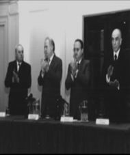

|

| |
CONCURSOS DOCENTES
OPOSICION Y ANTECEDENTES
En muchas instituciones el acceso a los cargos de docencia e investigación
se realiza mediante un concurso en el que un jurado de pares decide cuál de los
aspirantes reúne el mayor mérito. La situación no es cómoda. El gasto de adrenalina
que generan estas situaciones tan competitivas, sobre todo en el marco de una
economía donde las oportunidades laborales escasean, suele disgustar a un gran
número de posibles candidatos. Sin embargo el método ofrece ventajas que no pueden
desatenderse.
Construyamos nuestro personaje: Juan es argentino y
tiene 35 años. Con mucho esfuerzo terminó una carrera y con mucho más consiguió
un cargo docente en una institución del Estado. El salario es miserable, pero
la permanencia en el sistema le permitió incorporar dos cargos más. Ahora gana
mucho más que un peón de zafra pero apenas le alcanza para mantener a su familia,
que todavía se aferra a la idea de pertenecer a la clase media. Los índices de
desocupación comienzan a preocupar a Juan justo cuando su director le anuncia
que, con la consolidación democrática, los cargos estatales, incluidos los suyos,
deberán concursarse. Juan entra en pánico. Sabe -o sospecha- que tendrá que competir
con un nutrido grupo de buitres entre los que seguramente habrá jóvenes emprendedores,
licenciados, masters, doctores, todos llenos de diplomas y medallas que obtuvieron
mientras él sudaba la gota gorda al frente de los cursos. Bajón total.
EXCELENCIA
VERSUS ESTABILIDAD
La idea de enfrentarse con un jurado examinador le
trae a Juan viejos recuerdos de estudiante fuertemente relacionados con malestares
de panza. Resulta difícil creer que estos trances puedan representar alguna ventaja
para alguien.
Según la doctora en química Cecile Du Mortier, secretaria
académica adjunta de la Facultad de Ciencias Exactas y Naturales, las respuestas
son obvias: la selección por concurso, con juicio de pares, oposición y antecedentes,
es la mejor garantía de lograr la excelencia académica. "Así como una empresa
debe cuidar el interés económico, una institución educativa debe velar por la
excelencia, la calidad de la enseñanza y la investigación", afirma convencida.
En las universidades públicas los cargos regulares de profesor, es decir,
aquellos que se designan mediante el reglamento de provisión de cátedra -por concurso-
gozan de una estabilidad de 7 años, suficiente como para que el docente no viva
el régimen como un atentado contra su estabilidad laboral. "Además -refuerza Du
Mortier-, sitúa a los docentes e investigadores en el lugar que nunca debieron
abandonar: un sistema de competencia permanente. Garantizar la existencia de ese
lugar es proteger a los docentes, no sólo a la institución. Es el método más auténtico
de alentar la promoción, reconocer los logros y los avances". Es probable que
Juan se sienta mucho más valorado en un sistema como éste.
DEMOCRACIA
VERSUS DEDOCRACIA
Pero existen también otros motivos de peso para preferir
los concursos. Tal vez Juan nunca se preguntó, por ejemplo, cuántas posibilidades
de empleo quedaron fuera de su alcance porque estuvieron reservadas sólo a los
conocidos o amigos de los directores. El sistema de concursos garantiza la democracia
y la transparencia de la asignación de empleo. "En el 83, cuando recuperamos la
vigencia de las instituciones -recuerda el doctor en Física Jorge Aliaga, un ex
consejero de la FCEyN- el nivel de la planta docente dejaba mucho que desear.
Durante las dictaduras, la designación de profesores se había efectuado arbitrariamente.
Habían sido los directivos los que eligieron el plantel 'a dedo'. Ocurrió lo que
en tantos otros lugares: la elección se llevó a cabo con criterios amiguistas
y de discriminación política."
En el sistema de concursos los que deciden
son "pares" (tienen la misma profesión del aspirante) que actúan de jurados y
se eligen en base a su jerarquía profesional, prefiriendo siempre a los que no
pertenecen a la institución, y trayendo incluso a personalidades del extranjero.
El reglamento prevé garantías administrativas para los aspirantes, desde la recusación
de jurados hasta la impugnación de dictámenes, que son atendidos por cuerpos de
representación democrática.
En Exactas el cambio fue rotundo: no sólo
se renovó el cuerpo de profesores con llamados a concursos (algo que prevé la
reglamentación universitaria) sino que se implementó un sistema particular por
el cual hasta el más pichón auxiliar de segunda debió acceder a su ayudantía mediante
un concurso.
No ocurrió lo mismo en todas las instituciones. El Reglamento
de Provisión de Cátedra de la UBA no tiene fuerza de obligatoriedad. Basta con
no hacer el llamado a concurso, entonces el cargo habrá que cubrirlo en forma
interina. Hay facultades en las que sólo el 20% de los profesores es regular,
es decir el 80% restante y la totalidad de los auxiliares son designados arbitrariamente.
"No hay que olvidar -apunta el doctor Aliaga- que el gobierno de las Facultades
y de la Universidad es ejercido en gran parte por el claustro de profesores integrado
sólo por aquellos que son regulares. No hacer los llamados a concursos, tanto
nuevos como renovaciones, supone, en cierto modo, una forma de perpetuación ilegítima
en el poder. En nuestra Facultad, tanto la gestión actual como la anterior le
dieron prioridad a los concursos sin discriminaciones, es decir, sin pensar bajo
ningún aspecto la filiación política de los interesados en la selección".
GESTIONES
PRIVADAS
Olvidemos por un momento los complejos de persecución que heredamos
de las dictaduras, ¿no es posible imaginar una elección arbitraria con criterios
académicos? Tal vez sí, de hecho muchas universidades del mundo, y la totalidad
de las privadas argentinas optan por el método arbitrario sin temor a ser tildadas
de tendenciosas. Pero vayamos por partes: "Si bien las privadas no designan por
concursos -advierte la doctora Du Mortier-, utilizan el sistema a la hora de evaluar
el currículum, es decir, le asignan una gran importancia a los antecedentes que
presentan los postulantes cuando estos fueron ganados por oposición en instituciones
públicas".
Por otro lado imaginemos una institución confesional. En principio
no sería objetable que eligiesen a sus docentes de acuerdo al credo. "Sin embargo,
si una institución académica quiere apuntar a la excelencia, no puede optar por
ninguna otra pauta de selección que no sea la propia excelencia. Cualquier otro
criterio obraría en contra. El llamado a concurso abierto garantiza la diversidad,
garantiza la presencia de los librepensadores, en suma -remata Du Mortier-, la
presencia de la creatividad."
Juan puede ser creyente o ateo, conservador
o comunista, puede tener aritos y el pelo largo o parecer un muñeco de la city,
no importa. Un clima pluralista y de libertad permitirá que desarrolle su profesión,
su ciencia, y dé lo mejor de sí mismo, sin temor a los prejuicios de sus pares
y superiores.
Para ejercer su profesión, Juan sólo debe ser juzgado por
su actuación profesional, sus antecedentes profesionales, y sus proyectos profesionales.
Aún con sus desventajas, con su burocracia, con el stress que implica, es el mejor
método de selección. Es como la democracia: llena de defectos, pero deseable a
cualquier otro sistema de gobierno. Sin dudas Juan también lo va a preferir.
Artículo publicado en la revista EXACTAmente. Todos los derechos reservados. Se permite su reproducción citando la fuente. Última actualización jun-06. Buenos Aires, Argentina. |